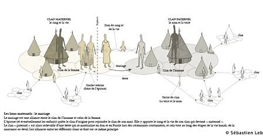
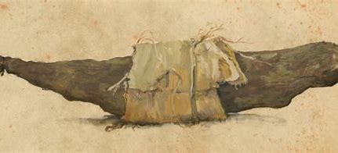
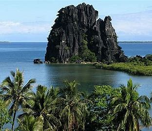
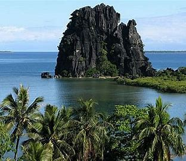

Les Kanak, tout comme la majorité des Océaniens,
sont les descendants d’un lointain peuple de
navigateurs, les Austronésiens. Ils peuplent la
Nouvelle-Calédonie vers 1100 av. J.-C. et y développent,
jusqu’au début du premier millénaire de notre ère,
une culture principalement littorale. Elle est
caractérisée par de magnifiques poteries décorées
dites « Lapita» et la construction de murs de pierres
monumentaux comme à Maré.
De 1000 à 1774, la société traditionnelle kanak
s’élabore progressivement. En dépit d’une très
grande diversité linguistique, des réseaux de relations
ou « chemins coutumiers » complexes se tissent tant
entre les clans de la Grande Terre que ceux des îles
Loyauté. Les billons d’ignames et les tarodières
fossiles, dont on retrouve encore de nombreux
exemples, témoignent d’une horticulture
sophistiquée gérée par un système social fédéré
autour de chefferies
Géographie
La Nouvelle-Calédonie est un territoire français d’outre-mer
situé dans le Pacifique-Sud, soit à 1500 km à l'est de l'Australie
et à 1700 km au nord de la Nouvelle-Zélande. Elle est constituée
d'une île principale, la Grande Terre, et de plusieurs dépendances,
qui représentent une surface totale de 18 585 km². Ainsi, après
la Papouasie-Nouvelle-Guinée et la Nouvelle-Zélande, la Nouvelle-Calédonie
représente la troisième île en importance du Pacifique-Sud.
Située en outre à quelque 18 000 km de la Métropole, elle fait partie
de l’un des trois territoires français du Pacifique-Sud, avec la
Polynésie française et Wallis-et-Futuna.
Nouméa, capitale
Nouméa, principale ville portuaire de Nouvelle-Calédonie, est le chef-lieu
de cette collectivité d'outre-mer française au statut spécifique et de la Province Sud,
située sur une presqu'île de la côte sud-ouest de la Grande Terre.
D'importance moyenne à l'échelle française (94 285 habitants en 2019), même en
comptabilisant sa banlieue et sa couronne périurbaine (182 341 habitants), Nouméa
est la plus grande ville francophone d'Océanie devant Papeete, et l'une des plus
importantes de la France d'outre-mer (la troisième, après Saint-Denis
et Saint-Paul de La Réunion). Elle est la 46e commune la plus peuplée en
France et le Grand Nouméa correspond à la 53e aire urbaine française (la quatrième
d'outre-mer, après celles de Pointe-à-Pitre-Les Abymes en Guadeloupe, de Mamoudzou
à Mayotte et de Saint-Denis à La Réunion).
Un peu d'histoire
Le 4 septembre 1774, l'aspirant Colnett, membre de l'équipage du HMS Resolution
commandé par le navigateur britannique James Cook, lors de la seconde expédition
de ce dernier, est le premier à apercevoir la Grande Terre. Cook la baptise
« New Caledonia », pour donner à sa découverte le nom d'une région de Grande-Bretagne
(Calédonie est l'ancien nom latin de la province correspondant à l'Écosse), tout comme
il l'avait fait auparavant pour l'archipel des New Hebrides (Nouvelles-Hébrides,
actuellement Vanuatu) et New South Wales (Nouvelle-Galles du Sud) en Australie.
Le 5 septembre ont lieu les premiers contacts entre des Européens (Cook et son équipage)
et les Kanak à Balade, sur la côte nord-est de la Grande Terre, principalement avec
le chef Téobooma, ou Téâ Buumêê. James Cook longe ensuite la côte Est et découvre
le 23 septembre l'Île des Pins.
Par la suite, la plupart des explorateurs à s'intéresser à l'archipel sont français.
Ainsi, il est probable qu'en 1788, l'expédition française conduite par La Pérouse
reconnaît la côte Ouest à bord de l'Astrolabe et de La Boussole, juste avant de sombrer
dans un naufrage sur le récif de Vanikoro aux Îles Salomon.
En 1793, le contre-amiral français Antoine Bruny d'Entrecasteaux, parti en 1791
à la demande de Louis XVI pour retrouver La Pérouse, passe au large de la Nouvelle-Calédonie,
reconnaît la Côte Ouest de la Grande Terre et se serait arrêté notamment aux Îles Loyauté.
Néanmoins, on attribue la découverte de ces dernières à l'explorateur français Jules Dumont
d'Urville en 1827, le premier à les situer précisément sur une carte.
À elle seule, la Nouvelle-Calédonie représente 75 % des récifs et lagons
des territoires français. L’extraordinaire richesse de la vie marine est
un héritage exceptionnel. Imaginez : 24 000 km² de lagon protégé à parcourir,
350 espèces de coraux et près de 1 600 espèces de poissons !
Le lagon calédonien est aussi un formidable terrain de jeu et d’émerveillement
. En simple randonnée palmée, les spots de
plongée sont réputés pour leur faune et leur flore étonnamment variées. Vous
découvrirez des écosystèmes intacts et préservés au cœur des structures récifales
au sein desquelles une multitude d'espèces a trouvé refuge.
L'anse vata
Le quartier s'organise autour de la baie et de la plage de l'Anse Vata
qui lui donne son nom. Cette anse constitue le littoral sud-ouest de la
presqu'île nouméenne, s'étendant sur plus de 2 km du rocher à la Voile à
l'ouest jusqu'à la pointe Magnin (ou du Château Royal) au sud-est, et est
également longée par la Promenade Roger Laroque.
Le nom d'Anse Vata est aussi donné à la plaine qui s'étend à l'intérieur des
terres jusqu'au Receiving et au Motor Pool, ainsi qu'à la route qui en constitue
le principal axe de communication avec la promenade Roger Laroque et qui relie
du sud au nord la plage au centre-ville (au niveau de la Vallée du Génie).
Elle a une fonction avant tout balnéaire et touristique.
L'île des pins
L'île des Pins (Kunié en langue kanak, Kwênyii), aussi surnommée
l'« île la plus proche du paradis » (concurremment avec Ouvéa), est un petit système
insulaire français au sud-est de la Grande Terre en Nouvelle-Calédonie. Il
s'agit également d'une commune et d'un district coutumier. Elle est située presque
sur le tropique du Capricorne par 167º de longitude est et 22º de latitude sud.
Elle fait partie de l'aire coutumière Djubéa-Kaponé.
L'île, un atoll surélevé1, mesure 14 kilomètres sur 18. La rivière principale est l'Ouro.
Le centre de l'île est occupé par un plateau et un léger relief dont le point culminant,
le pic N'ga, s'élève à 262 m.
L'île est située à environ 16 830 kilomètres de Paris à vol d'oiseau ce qui en fait
la commune française d'outre-mer la plus éloignée de la métropole
La poule de hienguène
On pourrait penser que nous parlons d’un animal, mais il n’en est rien.
Site incontournable de la Nouvelle Calédonie, laissez-nous vous présenter
la Poule de Hienghène.
Sur la côte Est de la Nouvelle-Calédonie, il s’agit d’une formation rocheuse
ayant surgi dans les eaux de Hienghène.
Véritable symbole naturel, il vous sera possible de l’admirer de loin comme de près,
lors d’une excursion en canoë kayak.
Vous vous retrouverez alors devant ses roches noircies sur lesquelles la nature
semble s’y plaire.
Vous ne pourrez qu’être frappé par la ressemblance entre l’animal de basse-cour
et cette gigantesque forme géologique.
Un peu plus loin, vous pourrez admirer le sphinx.
Il vous faudra faire preuve d’imagination pour d’une part visualiser la poule
et le sphinx, mais aussi comprendre la magnifique légende sur l’apparition de la
poule couveuse venue en aide au peuple de l’île.
Un site à ne pas manquer lors de votre séjour en Nouvelle Calédonie !
La beauté du lagon de Nouvelle-Calédonie
Le lagon de la province Sud
La culture kanak
Chant traditionnel kanak
Nom du chant: Cemel. Artiste incconu, chant transmis oralement depuis des générations.
Le chant kanak a une utilité rituel et certains sont utilisé pour les mariages, enterrements
et autres cérémonies importante
Le fonctionnement de la tribu kanak

La société kanake est organisée sur la base d'une unité sociale et spatiale particulière,
le clan est organisée aujourd'hui dans un ensemble de cadres coutumiers hiérarchiques
pour la plupart créés après l'arrivée des Européens.
La culture de l'igname

L’igname, tubercule consommé en Nouvelle Calédonie mais aussi dans la plupart des îles
océaniennes, est un élément important de la culture Kanak. La culture de l’igname rythme
la vie des clans dans chaque tribu mais marque aussi des événements dans la tradition
(mariages, deuils, naissances, intronisation d’un chef…).
Le réferundum pour l'indépendance
Le référendum de 2021 sur l'indépendance de la Nouvelle-Calédonie est un référendum
d'autodétermination organisé le 12 décembre 2021.
Il s'agit du dernier des trois référendums prévus dans le cadre de l'accord de Nouméa de 1998,
après celui de 2018 (soldé par une victoire du « non » à 56,7 %) et celui de 2020
(victoire du « non » à 53,3 %), ainsi que du quatrième et dernier référendum organisé sur
l'indépendance de la Nouvelle-Calédonie, un premier ayant été organisé en 1987 mais boycotté par
les indépendantistes.
 
